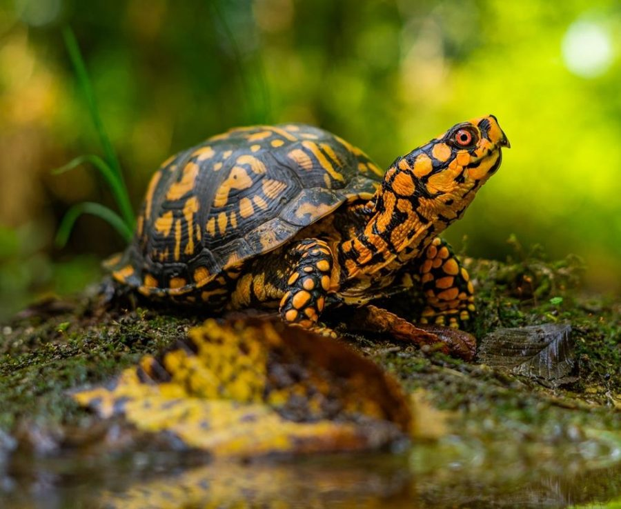

Kame Life Guide — 亀選びガイド
100種の亀データから、飼育スペース・経験・初期費用・臭いや掃除の許容度などをもとに、あなたに合う1種を探します。
一匹との出会いを、静かに楽しみましょう。実際の飼育経験と、公的機関・専門文献・信頼できる長期飼育情報をもとに記事を作成・更新しています。飼育していない種は、資料にもとづく情報であることを明記しています。
50〜100
亀は、50年。種によっては100年以上生きる。
だから、焦って選ぶ必要はありません。
あなたの暮らしに合う一匹を、静かに探しましょう。
臭いは？
水換え・濾過・種類選びで大きく変わります。
診断で臭いの少ない種を絞り込めます
初心者でも大丈夫？
丈夫な種と、最初から避けたい種があります。
診断が向いている種・難しい種を分けてお伝えします
いくらかかる？
初期費用と毎月の維持費を、診断後に目安表示します。
Starter Kitで必要機材と費用をまとめて確認できます
長く飼える？
亀は長寿。だから相性を見て選ぶことが大切です。
ライフスタイルに合った種を診断が提案します
暮らしのタイプ・人気種・比較から、あなたに合う一匹を探します。
水の中から、大地の上まで。
あなたの暮らしに合った世界を、静かに探してください。
水槽の大きさ、ライトの強さ、床材の種類。カメの飼育で迷うことは尽きません。けれど、その答えのほとんどは「そのカメが野生でどう暮らしているか」の中にあります。乾いた草原を歩き回るリクガメと、薄暗い林の床に潜むヤマガメでは、必要なものがまるで違うからです。
このサイトでは、カメを暮らしのタイプで分け、それぞれの生態から逆算して飼育環境と機材を考えていきます。難しい話を並べるのではなく、「なぜそれが必要なのか」が腑に落ちるように書いているつもりです。お迎えを迷っている方も、すでに一緒に暮らしている方も、気になるところから読んでみてください。
飼っている（迎えたい）カメの暮らしに近いタイプを選ぶと、必要な環境と機材の考え方がまとまっています。
一日の多くを水の中で過ごすカメ。泳げる水量と、甲羅を乾かす陸場の両立が健康の土台になります。
河口や塩性湿地に適応した、少し特殊な暮らしのカメ。水質と塩分の管理に専門的な配慮が要ります。
泳ぐより水底を歩くのが得意なカメ。浅い水位と、登れる陸場・隠れ家がポイントになります。
湿った林の床に暮らす森林性のカメ。湿度と隠れ家、浅い水場で「しっとりした林床」を再現します。
乾いた草原を歩き回るリクガメ。広い床面積と強い光、草食メインの食事が暮らしの起点です。
湿度のある暖かい環境を好む熱帯のリクガメ。広さに加え、適度な保湿が幼体期の健康を左右します。
砂に潜るスッポンと、首を横に曲げる曲頸類。どちらも深水と強力なろ過が飼育の核心になります。
日本の清流と里山に生きる固有種。野外個体は採集禁止——CB個体を選ぶことが保全につながります。
写真・特徴・飼育難易度を並べて比較して、
あなたに合う亀を見つけます。
実飼育者が書いた、種別ガイドページ。飼育環境・機材・よくある質問まで一種ずつまとめています。
リクガメ入門の定番。60〜90cmケージから始められる乾燥系リクガメ。好奇心旺盛でなつきやすい。
水棲ガメ入門の定番。最大14cm・30cm水槽から。慣れれば臭いも少なく飼育しやすい小型種。
腹甲を完全に閉じる独自構造の北米産ハコガメ。雑食性で飼育食への移行がしやすい。著者も飼育中。
湿った林床を好む小型ヤマガメ。高湿度環境と豊富な隠れ家が重要。マニア人気が高い。著者も飼育中。
水棲寄りだが陸場も使う西アフリカ産の曲頸類。丈夫さと個性的な姿が魅力で、ろ過と陸場設計が飼育の鍵。
日本で馴染み深い代表種。丈夫で適応力が高いが、成長後サイズも考慮したい。
見た目が似ていても、飼いやすさはまったく違う。
人気の比較を、1分で確認。
初心者が迷いやすい代表種を、飼育難易度・匂い・初期費用で比較しました。
| 種名 | 難易度 | 匂い | 初期費用 | 初心者向け |
|---|---|---|---|---|
| ミシシッピニオイガメ Sternotherus odoratus | ¥ | ◎ | ||
| ヘルマンリクガメ Testudo hermanni | ¥¥¥ | ○ | ||
| ミツユビハコガメ Terrapene carolina triunguis | ¥¥ | △ | ||
| スペングラーヤマガメ Geoemyda spengleri | ¥¥¥ | × |
まだ迷っているなら、30秒診断が確実です。
表の比較はあくまで目安。予算・スペース・臭いの不安を入力すれば、100種からあなたに合う1種を提案します。
初期費用の目安と、最初に揃えたい定番機材をまとめました。
亀選びの次に大切なのは、環境づくり。
必要なのは「高い機材」ではなく、
その種に合った飼育環境です。
代表種：ミシシッピニオイガメ、クサガメ
30cm水槽・フィルター・ヒーターがあれば始められます。小型なので維持費も抑えやすく、初めての亀に最も選ばれているタイプです。
代表種：ミツユビハコガメ、トウブハコガメ
半陸棲・半水棲で、水場と陸場の両方が必要です。温度・湿度の管理が重要ですが、適切な環境を作れば長く付き合える種です。
代表種：ヘルマンリクガメ、ギリシャリクガメ
UVBライト・バスキングライト・保温器具が必要で初期費用は高めです。ただし一式揃えれば数十年の長期飼育ができる、育てがいのあるタイプです。
実飼育者が最初に選ぶ信頼の定番
機材ごとに、実在を確認した製品をベスト10で紹介しています。「野生の暮らしから逆算する」という視点はどのページにも通底しています。
食べない、鼻水が出る、目が開かない——症状から原因と対処法を確認できます。
水槽・床材・温度・食事。飼い始めてから必要になる知識を、飼育スタイル別に整理しています。
難易度・費用・サイズの三軸で、初心者が後悔しにくい種をランキング形式で解説。
初心者向け選び方を読む Care Module 0230〜45cm水槽から飼える最大15cm以下の小型種を厳選。省スペース派に最適な3種を比較。
小型種3選を見る Care Module 03管理次第で臭いを抑えられる種と方法を解説。陸棲なら水の問題ごと解消できます。
臭い対策ガイドを読む Care Module 04うちの子の甲長から「今使える／もう使えない／次に買う」を逆引き。実飼育者の失敗事例つき。安全判定を購入リンクより先に。
KID（甲長逆引きDB）を見る予算・部屋サイズ・臭いの不安を選ぶだけ
100種から相性のいい候補を絞り込む
難易度・費用・手間を横並びで確認
必要な機材をまとめて把握してスタート
迷っていた亀選びが、楽しみに変わる。
100種の生体データ・飼育ページ・機材DB・比較システムをもとに、候補をご案内しています。
データは実際の飼育経験と信頼できる資料をもとに継続的に更新しています。
予算・スペース・臭いの不安を入力するだけ。
100種から、あなたの条件に合う一匹を提案します。